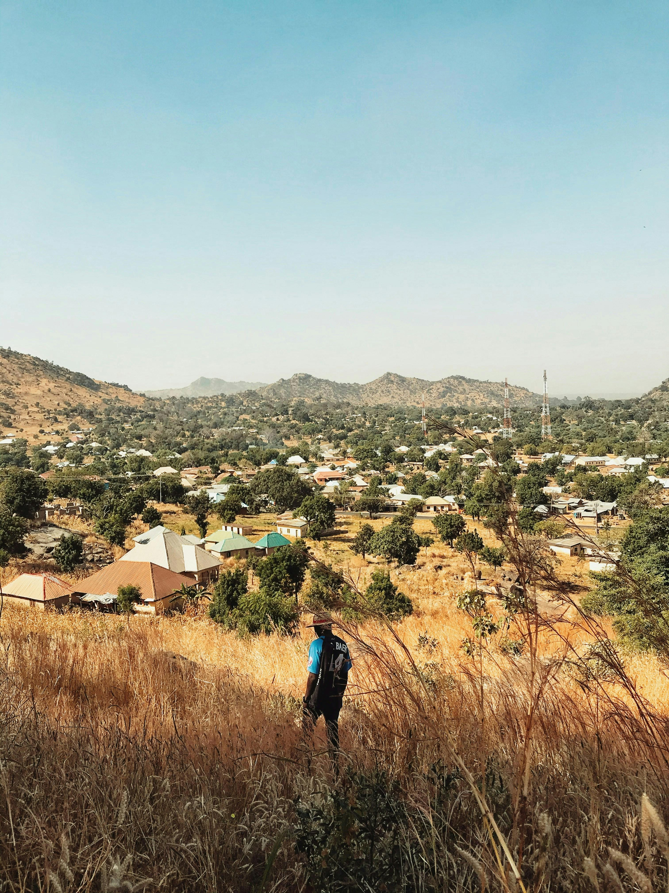
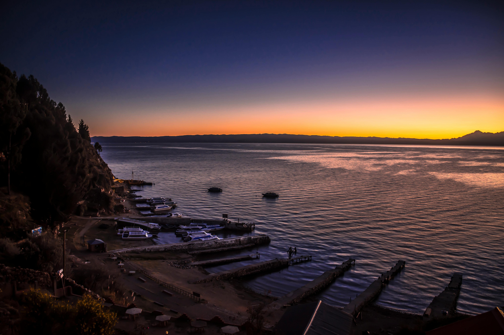

MY VlOG
Welcome to the vlog of Nature
Naija Chronicles
Title description, April 7, 2014
Explore the wonders of Nigeria, one destination at a time. From the vibrant cities to serene countryside, we bring you closer to Nigeria's most captivating landscapes and rich cultural heritage. Join me on a journey filled with adventure, discovery, and unforgettable moments. Let the beauty of Naija inspire your next great escape.
Naija Adventures
Title description, April 2, 2014
Discover the heart of Nigeria, one destination at a time. From bustling cities to peaceful villages, explore vibrant cultures, stunning landscapes, and hidden gems. Join us on a journey filled with adventure, tradition, and unforgettable experiences. Let Nigeria inspire your next great adventure.
ProsperKwewum
It's just me, myself, and I, embarking on a journey through the uncharted corners of the world. With a heart full of passion and a curiosity for adventure, I'm here to explore, discover, and share it all with you. Welcome to my world—let's experience the extraordinary together.
Popular Posts
-
Lagos at Sunset
Vibrant beaches, stunning sunsets, and lively Lagos nightlife. -

Exploring Calabar
Calabar’s rich history, green landscapes, and unique culture. -

The Beauty of Abuja
From Zuma Rock to serene parks, explore Nigeria’s capital.

Tags
Travel New York London IKEA NORWAY DIY Ideas Baby Family News Clothing Shopping Sports Games